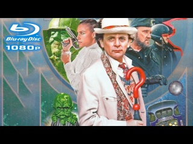
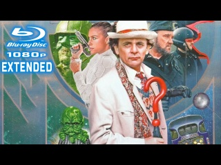
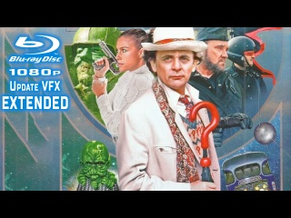

Субтитры: Русские и Английские |  |
|---|---|
Субтитры: только Английские |  |
с фанатским обновлением визуальных эффектов (cunningmunki) Субтитры: отсутствуют |  |
Delta and the Bannermen
Дата выхода: 2-16 ноября 1987
Формат: 3 эпизода по 25 мин.
|
ТАРДИС становится десятимиллиардным клиентом межзвёздного порта, и Доктор с Мел выигрывают бесплатный тур — на автобусе сквозь время в Землю 1959 года. Но среди пассажиров прячется Дельта — королева химеронов, последняя из своего вида. А за ней по пятам идут знаменосцы во главе с Гавроком.
Первая трёхэпизодная серия как стандарт — этот формат останется с Маккоем до конца классического сериала. Здесь впервые появляется зонтик с ручкой-вопросительным знаком — фирменный атрибут Седьмого. Второстепенную героиню Рэй планировали в новые спутницы вместо Мел, но в итоге придумали Эйс. А лагерь, где шли съёмки, позже использовали для «Пустого ребёнка».
VHS - март 2001 |  DVD - 22 июня 2009 |  Blu-ray - 28 июня 2021 * Версия в нашей группе |
|---|